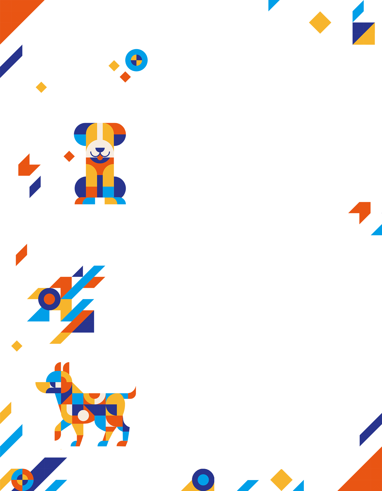
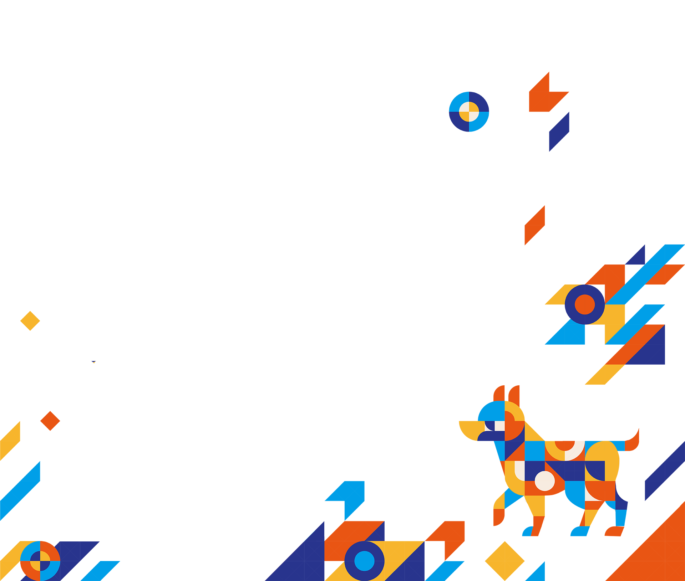

動物福利已成為全球文明社會的重要指標之一，亦與公共衛生、社會安全及生命教育密切相關。台灣政府不斷推出動物保護政策以加強動物福利及動保觀念，2017年推動零撲殺政策，在動物保護制度上逐步建立具人道精神的治理模式，但隨著時間的流逝，全臺灣流浪動物的衝突卻未見止息，去年在高雄市永安區更迸發浪犬咬死泳客的悲劇，野生動物因為浪犬産生無數的消亡，如何解決流浪犬問題正是刻不容緩的議題。
2026國際動物保護論壇透過國際遊蕩犬現況及野外族群控制、源頭管理與犬隻總量管制、産業影響力帶動社會動保參與、收容管理與永續經營及協會獨步全球的狗來富專案等五大議題進行國際交流，分享臺灣經驗並促進國際動物保護合作，一同凝聚臺灣動物保護福利及流浪動物的新解方。
Animal welfare has become a key indicator of civil society worldwide, closely intertwined with public health, social safety, and life education. The Taiwanese government has continuously introduced animal protection policies to strengthen animal welfare and public awareness. Notably, the implementation of the "zero-euthanasia" policy in 2017 marked a gradual shift toward a governance model rooted in humanitarian principles. However, despite these efforts, conflicts surrounding stray animals across Taiwan have not ceased. Last year, a tragedy occurred in the Yongan District of Kaohsiung City, where a swimmer was fatally attacked by roaming dogs; furthermore, countless wildlife species continue to perish due to conflicts with free-ranging dogs. Addressing the issue of stray dogs has truly become a matter of utmost urgency.
The 2026 International Animal Protection Forum serves as a platform for global exchange, focusing on five core themes:
1. International Status of Roaming Dogs and Free-Ranging Population Control.
2. Source Management and Dog Population Caps.
3. Driving Social Engagement in Animal Protection via Industry Influence.
4. Shelter Management and Sustainable Operations; and
5. The APA's Globally Unique "Go Home Project."
By sharing Taiwan's experiences and fostering international cooperation in animal protection, this forum aims to collectively forge innovative solutions for animal welfare and stray animal management in Taiwan.

成立於民國49年6月4日的中華民國保護動物協會，至今已有超過60年歷史，在過去的歳月中，除致力於宣導動物保護觀念外，也設立了動物保育場，從事流浪動物收容工作。分別於民國78年及87年催生「野生動物保育法」與「動物保護法」。近年來協會更是擴大社會責任，開辦「狗來富專案」、「寵物食物銀行」等勸募活動，並開設動物保護志工培訓課程培育動保所需志工，透過多元的方式增進動物福利進而解決流浪動物所造成的社會問題。
Founded on June 4, 1960, the Animal Protection Association of the Republic of China (APA) boasts a history spanning over six decades. Throughout its years of dedication, the Association has not only championed the core concepts of animal protection but also established animal shelters dedicated to the rescue and care of stray animals. Notably, the APA played a pivotal role in promoting and establishing the Wildlife Conservation Act in 1989 and the Animal Protection Act in 1998.
In recent years, the Association has further expanded its social responsibility by launching public fundraising initiatives such as the "Go Home Project" (for rehoming stray dogs) and the "Pet Food Bank." Furthermore, it offers animal protection volunteer training programs to cultivate professional talent in the field. Through these diverse strategies, the APA continues to enhance animal welfare and proactively address the social challenges associated with stray animals.